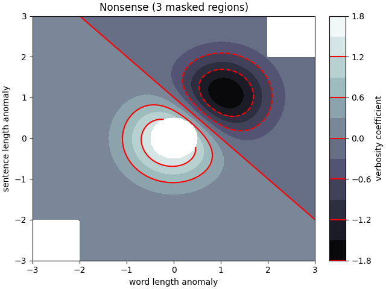
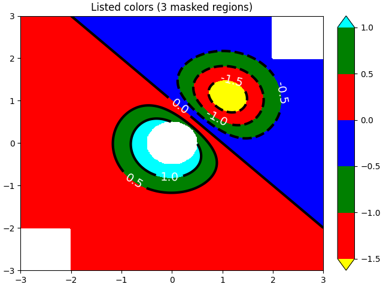
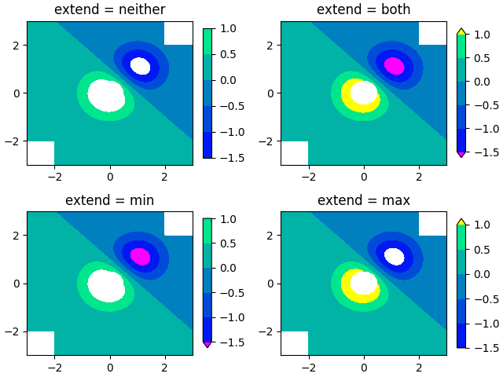

Note
Click here to download the full example code
Contourf Demo¶
How to use the axes.Axes.contourf method to create filled contour plots.
import numpy as np
import matplotlib.pyplot as plt
origin = 'lower'
delta = 0.025
x = y = np.arange(-3.0, 3.01, delta)
X, Y = np.meshgrid(x, y)
Z1 = np.exp(-X**2 - Y**2)
Z2 = np.exp(-(X - 1)**2 - (Y - 1)**2)
Z = (Z1 - Z2) * 2
nr, nc = Z.shape
# put NaNs in one corner:
Z[-nr // 6:, -nc // 6:] = np.nan
# contourf will convert these to masked
Z = np.ma.array(Z)
# mask another corner:
Z[:nr // 6, :nc // 6] = np.ma.masked
# mask a circle in the middle:
interior = np.sqrt(X**2 + Y**2) < 0.5
Z[interior] = np.ma.masked
# We are using automatic selection of contour levels;
# this is usually not such a good idea, because they don't
# occur on nice boundaries, but we do it here for purposes
# of illustration.
fig1, ax2 = plt.subplots(constrained_layout=True)
CS = ax2.contourf(X, Y, Z, 10, cmap=plt.cm.bone, origin=origin)
# Note that in the following, we explicitly pass in a subset of
# the contour levels used for the filled contours. Alternatively,
# We could pass in additional levels to provide extra resolution,
# or leave out the levels kwarg to use all of the original levels.
CS2 = ax2.contour(CS, levels=CS.levels[::2], colors='r', origin=origin)
ax2.set_title('Nonsense (3 masked regions)')
ax2.set_xlabel('word length anomaly')
ax2.set_ylabel('sentence length anomaly')
# Make a colorbar for the ContourSet returned by the contourf call.
cbar = fig1.colorbar(CS)
cbar.ax.set_ylabel('verbosity coefficient')
# Add the contour line levels to the colorbar
cbar.add_lines(CS2)
fig2, ax2 = plt.subplots(constrained_layout=True)
# Now make a contour plot with the levels specified,
# and with the colormap generated automatically from a list
# of colors.
levels = [-1.5, -1, -0.5, 0, 0.5, 1]
CS3 = ax2.contourf(X, Y, Z, levels,
colors=('r', 'g', 'b'),
origin=origin,
extend='both')
# Our data range extends outside the range of levels; make
# data below the lowest contour level yellow, and above the
# highest level cyan:
CS3.cmap.set_under('yellow')
CS3.cmap.set_over('cyan')
CS4 = ax2.contour(X, Y, Z, levels,
colors=('k',),
linewidths=(3,),
origin=origin)
ax2.set_title('Listed colors (3 masked regions)')
ax2.clabel(CS4, fmt='%2.1f', colors='w', fontsize=14)
# Notice that the colorbar gets all the information it
# needs from the ContourSet object, CS3.
fig2.colorbar(CS3)
# Illustrate all 4 possible "extend" settings:
extends = ["neither", "both", "min", "max"]
cmap = plt.cm.get_cmap("winter")
cmap.set_under("magenta")
cmap.set_over("yellow")
# Note: contouring simply excludes masked or nan regions, so
# instead of using the "bad" colormap value for them, it draws
# nothing at all in them. Therefore the following would have
# no effect:
# cmap.set_bad("red")
fig, axs = plt.subplots(2, 2, constrained_layout=True)
for ax, extend in zip(axs.ravel(), extends):
cs = ax.contourf(X, Y, Z, levels, cmap=cmap, extend=extend, origin=origin)
fig.colorbar(cs, ax=ax, shrink=0.9)
ax.set_title("extend = %s" % extend)
ax.locator_params(nbins=4)
plt.show()
- 
- 
- 
Out:
/root/matplotlib/examples/images_contours_and_fields/contourf_demo.py:91: MatplotlibDeprecationWarning: You are modifying the state of a globally registered colormap. In future versions, you will not be able to modify a registered colormap in-place. To remove this warning, you can make a copy of the colormap first. cmap = copy.copy(mpl.cm.get_cmap("winter"))
cmap.set_under("magenta")
/root/matplotlib/examples/images_contours_and_fields/contourf_demo.py:92: MatplotlibDeprecationWarning: You are modifying the state of a globally registered colormap. In future versions, you will not be able to modify a registered colormap in-place. To remove this warning, you can make a copy of the colormap first. cmap = copy.copy(mpl.cm.get_cmap("winter"))
cmap.set_over("yellow")
References¶
The use of the following functions, methods and classes is shown in this example:
import matplotlib
matplotlib.axes.Axes.contour
matplotlib.pyplot.contour
matplotlib.axes.Axes.contourf
matplotlib.pyplot.contourf
matplotlib.axes.Axes.clabel
matplotlib.pyplot.clabel
matplotlib.figure.Figure.colorbar
matplotlib.pyplot.colorbar
matplotlib.colors.Colormap
matplotlib.colors.Colormap.set_bad
matplotlib.colors.Colormap.set_under
matplotlib.colors.Colormap.set_over
Out:
<function Colormap.set_over at 0x7f64e1b5daf0>
Total running time of the script: ( 0 minutes 1.390 seconds)
Keywords: matplotlib code example, codex, python plot, pyplot Gallery generated by Sphinx-Gallery